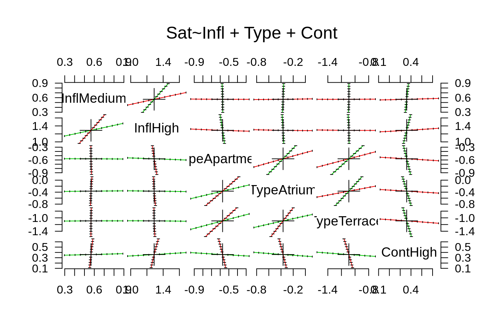

polr.RdFits a logistic or probit regression model to an ordered factor response. The default logistic case is proportional odds logistic regression, after which the function is named.
polr(formula, data, weights, start, ..., subset, na.action, contrasts = NULL, Hess = FALSE, model = TRUE, method = c("logistic", "probit", "loglog", "cloglog", "cauchit"))
| formula | a formula expression as for regression models, of the form
|
|---|---|
| data | an optional data frame in which to interpret the variables occurring
in |
| weights | optional case weights in fitting. Default to 1. |
| start | initial values for the parameters. This is in the format
|
| ... | additional arguments to be passed to |
| subset | expression saying which subset of the rows of the data should be used in the fit. All observations are included by default. |
| na.action | a function to filter missing data. |
| contrasts | a list of contrasts to be used for some or all of the factors appearing as variables in the model formula. |
| Hess | logical for whether the Hessian (the observed information matrix)
should be returned. Use this if you intend to call |
| model | logical for whether the model matrix should be returned. |
| method | logistic or probit or (complementary) log-log or cauchit (corresponding to a Cauchy latent variable). |
This model is what Agresti (2002) calls a cumulative link
model. The basic interpretation is as a coarsened version of a
latent variable \(Y_i\) which has a logistic or normal or
extreme-value or Cauchy distribution with scale parameter one and a
linear model for the mean. The ordered factor which is observed is
which bin \(Y_i\) falls into with breakpoints
$$\zeta_0 = -\infty < \zeta_1 < \cdots < \zeta_K = \infty$$
This leads to the model
$$\mbox{logit} P(Y \le k | x) = \zeta_k - \eta$$
with logit replaced by probit for a normal latent
variable, and \(\eta\) being the linear predictor, a linear
function of the explanatory variables (with no intercept). Note
that it is quite common for other software to use the opposite sign
for \(\eta\) (and hence the coefficients beta).
In the logistic case, the left-hand side of the last display is the log odds of category \(k\) or less, and since these are log odds which differ only by a constant for different \(k\), the odds are proportional. Hence the term proportional odds logistic regression.
The log-log and complementary log-log links are the increasing functions \(F^{-1}(p) = -log(-log(p))\) and \(F^{-1}(p) = log(-log(1-p))\); some call the first the ‘negative log-log’ link. These correspond to a latent variable with the extreme-value distribution for the maximum and minimum respectively.
A proportional hazards model for grouped survival times can be obtained by using the complementary log-log link with grouping ordered by increasing times.
predict, summary, vcov,
anova, model.frame and an
extractAIC method for use with stepAIC (and
step). There are also profile and
confint methods.
A object of class "polr". This has components
the coefficients of the linear predictor, which has no intercept.
the intercepts for the class boundaries.
the residual deviance.
a matrix, with a column for each level of the response.
the names of the response levels.
the terms structure describing the model.
the number of residual degrees of freedoms, calculated using the weights.
the (effective) number of degrees of freedom used by the model
the (effective) number of observations, calculated using the
weights. (nobs is for use by stepAIC.
the matched call.
the matched method used.
the convergence code returned by optim.
the number of function and gradient evaluations used by
optim.
the linear predictor (including any offset).
(if Hess is true). Note that this is a
numerical approximation derived from the optimization proces.
(if model is true).
The vcov method uses the approximate Hessian: for
reliable results the model matrix should be sensibly scaled with all
columns having range the order of one.
Prior to version 7.3-32, method = "cloglog" confusingly gave
the log-log link, implicitly assuming the first response level was the
‘best’.
Agresti, A. (2002) Categorical Data. Second edition. Wiley.
Venables, W. N. and Ripley, B. D. (2002) Modern Applied Statistics with S. Fourth edition. Springer.
options(contrasts = c("contr.treatment", "contr.poly")) house.plr <- polr(Sat ~ Infl + Type + Cont, weights = Freq, data = housing) house.plr#> Call: #> polr(formula = Sat ~ Infl + Type + Cont, data = housing, weights = Freq) #> #> Coefficients: #> InflMedium InflHigh TypeApartment TypeAtrium TypeTerrace #> 0.5663937 1.2888191 -0.5723501 -0.3661866 -1.0910149 #> ContHigh #> 0.3602841 #> #> Intercepts: #> Low|Medium Medium|High #> -0.4961353 0.6907083 #> #> Residual Deviance: 3479.149 #> AIC: 3495.149#> #>#> Call: #> polr(formula = Sat ~ Infl + Type + Cont, data = housing, weights = Freq) #> #> Coefficients: #> Value Std. Error t value #> InflMedium 0.566 0.1047 5.41 #> InflHigh 1.289 0.1272 10.14 #> TypeApartment -0.572 0.1192 -4.80 #> TypeAtrium -0.366 0.1552 -2.36 #> TypeTerrace -1.091 0.1515 -7.20 #> ContHigh 0.360 0.0955 3.77 #> #> Intercepts: #> Value Std. Error t value #> Low|Medium -0.496 0.125 -3.974 #> Medium|High 0.691 0.125 5.505 #> #> Residual Deviance: 3479.149 #> AIC: 3495.149#> Call: #> polr(formula = Sat ~ Infl + Type + Cont, data = housing, weights = Freq, #> Hess = TRUE, method = "probit") #> #> Coefficients: #> Value Std. Error t value #> InflMedium 0.346 0.0641 5.40 #> InflHigh 0.783 0.0764 10.24 #> TypeApartment -0.348 0.0723 -4.81 #> TypeAtrium -0.218 0.0948 -2.30 #> TypeTerrace -0.664 0.0918 -7.24 #> ContHigh 0.222 0.0581 3.83 #> #> Intercepts: #> Value Std. Error t value #> Low|Medium -0.300 0.076 -3.937 #> Medium|High 0.427 0.076 5.585 #> #> Residual Deviance: 3479.689 #> AIC: 3495.689## although it is not really appropriate, can fit summary(update(house.plr, method = "loglog", Hess = TRUE), digits = 3)#> Call: #> polr(formula = Sat ~ Infl + Type + Cont, data = housing, weights = Freq, #> Hess = TRUE, method = "loglog") #> #> Coefficients: #> Value Std. Error t value #> InflMedium 0.367 0.0727 5.05 #> InflHigh 0.790 0.0806 9.81 #> TypeApartment -0.349 0.0757 -4.61 #> TypeAtrium -0.196 0.0988 -1.98 #> TypeTerrace -0.698 0.1043 -6.69 #> ContHigh 0.268 0.0636 4.21 #> #> Intercepts: #> Value Std. Error t value #> Low|Medium 0.086 0.083 1.038 #> Medium|High 0.892 0.087 10.223 #> #> Residual Deviance: 3491.41 #> AIC: 3507.41#> Call: #> polr(formula = Sat ~ Infl + Type + Cont, data = housing, weights = Freq, #> Hess = TRUE, method = "cloglog") #> #> Coefficients: #> Value Std. Error t value #> InflMedium 0.382 0.0703 5.44 #> InflHigh 0.915 0.0926 9.89 #> TypeApartment -0.407 0.0861 -4.73 #> TypeAtrium -0.281 0.1111 -2.52 #> TypeTerrace -0.742 0.1013 -7.33 #> ContHigh 0.209 0.0651 3.21 #> #> Intercepts: #> Value Std. Error t value #> Low|Medium -0.796 0.090 -8.881 #> Medium|High 0.055 0.086 0.647 #> #> Residual Deviance: 3484.053 #> AIC: 3500.053#> Low Medium High #> 1 0.3784493 0.2876752 0.3338755 #> 2 0.3784493 0.2876752 0.3338755 #> 3 0.3784493 0.2876752 0.3338755 #> 4 0.2568264 0.2742122 0.4689613 #> 5 0.2568264 0.2742122 0.4689613 #> 6 0.2568264 0.2742122 0.4689613 #> 7 0.1436924 0.2110836 0.6452240 #> 8 0.1436924 0.2110836 0.6452240 #> 9 0.1436924 0.2110836 0.6452240 #> 10 0.5190445 0.2605077 0.2204478 #> 11 0.5190445 0.2605077 0.2204478 #> 12 0.5190445 0.2605077 0.2204478 #> 13 0.3798514 0.2875965 0.3325521 #> 14 0.3798514 0.2875965 0.3325521 #> 15 0.3798514 0.2875965 0.3325521 #> 16 0.2292406 0.2643196 0.5064398 #> 17 0.2292406 0.2643196 0.5064398 #> 18 0.2292406 0.2643196 0.5064398 #> 19 0.4675584 0.2745383 0.2579033 #> 20 0.4675584 0.2745383 0.2579033 #> 21 0.4675584 0.2745383 0.2579033 #> 22 0.3326236 0.2876008 0.3797755 #> 23 0.3326236 0.2876008 0.3797755 #> 24 0.3326236 0.2876008 0.3797755 #> 25 0.1948548 0.2474226 0.5577225 #> 26 0.1948548 0.2474226 0.5577225 #> 27 0.1948548 0.2474226 0.5577225 #> 28 0.6444840 0.2114256 0.1440905 #> 29 0.6444840 0.2114256 0.1440905 #> 30 0.6444840 0.2114256 0.1440905 #> 31 0.5071210 0.2641196 0.2287594 #> 32 0.5071210 0.2641196 0.2287594 #> 33 0.5071210 0.2641196 0.2287594 #> 34 0.3331573 0.2876330 0.3792097 #> 35 0.3331573 0.2876330 0.3792097 #> 36 0.3331573 0.2876330 0.3792097 #> 37 0.2980880 0.2837746 0.4181374 #> 38 0.2980880 0.2837746 0.4181374 #> 39 0.2980880 0.2837746 0.4181374 #> 40 0.1942209 0.2470589 0.5587202 #> 41 0.1942209 0.2470589 0.5587202 #> 42 0.1942209 0.2470589 0.5587202 #> 43 0.1047770 0.1724227 0.7228003 #> 44 0.1047770 0.1724227 0.7228003 #> 45 0.1047770 0.1724227 0.7228003 #> 46 0.4294564 0.2820629 0.2884807 #> 47 0.4294564 0.2820629 0.2884807 #> 48 0.4294564 0.2820629 0.2884807 #> 49 0.2993357 0.2839753 0.4166890 #> 50 0.2993357 0.2839753 0.4166890 #> 51 0.2993357 0.2839753 0.4166890 #> 52 0.1718050 0.2328648 0.5953302 #> 53 0.1718050 0.2328648 0.5953302 #> 54 0.1718050 0.2328648 0.5953302 #> 55 0.3798387 0.2875972 0.3325641 #> 56 0.3798387 0.2875972 0.3325641 #> 57 0.3798387 0.2875972 0.3325641 #> 58 0.2579546 0.2745537 0.4674917 #> 59 0.2579546 0.2745537 0.4674917 #> 60 0.2579546 0.2745537 0.4674917 #> 61 0.1444202 0.2117081 0.6438717 #> 62 0.1444202 0.2117081 0.6438717 #> 63 0.1444202 0.2117081 0.6438717 #> 64 0.5583813 0.2471826 0.1944361 #> 65 0.5583813 0.2471826 0.1944361 #> 66 0.5583813 0.2471826 0.1944361 #> 67 0.4178031 0.2838213 0.2983756 #> 68 0.4178031 0.2838213 0.2983756 #> 69 0.4178031 0.2838213 0.2983756 #> 70 0.2584149 0.2746916 0.4668935 #> 71 0.2584149 0.2746916 0.4668935 #> 72 0.2584149 0.2746916 0.4668935#> Single term additions #> #> Model: #> Sat ~ Infl + Type + Cont #> Df AIC LRT Pr(Chi) #> <none> 3495.1 #> Infl:Type 6 3484.6 22.5093 0.0009786 *** #> Infl:Cont 2 3498.9 0.2090 0.9007957 #> Type:Cont 3 3492.5 8.6662 0.0340752 * #> --- #> Signif. codes: 0 ‘***’ 0.001 ‘**’ 0.01 ‘*’ 0.05 ‘.’ 0.1 ‘ ’ 1#> Start: AIC=3495.15 #> Sat ~ Infl + Type + Cont #> #> Df AIC #> + Infl:Type 6 3484.6 #> + Type:Cont 3 3492.5 #> <none> 3495.1 #> + Infl:Cont 2 3498.9 #> - Cont 1 3507.5 #> - Type 3 3545.1 #> - Infl 2 3599.4 #> #> Step: AIC=3484.64 #> Sat ~ Infl + Type + Cont + Infl:Type #> #> Df AIC #> + Type:Cont 3 3482.7 #> <none> 3484.6 #> + Infl:Cont 2 3488.5 #> - Infl:Type 6 3495.1 #> - Cont 1 3497.8 #> #> Step: AIC=3482.69 #> Sat ~ Infl + Type + Cont + Infl:Type + Type:Cont #> #> Df AIC #> <none> 3482.7 #> - Type:Cont 3 3484.6 #> + Infl:Cont 2 3486.6 #> - Infl:Type 6 3492.5house.plr2$anova#> Stepwise Model Path #> Analysis of Deviance Table #> #> Initial Model: #> Sat ~ Infl + Type + Cont #> #> Final Model: #> Sat ~ Infl + Type + Cont + Infl:Type + Type:Cont #> #> #> Step Df Deviance Resid. Df Resid. Dev AIC #> 1 1673 3479.149 3495.149 #> 2 + Infl:Type 6 22.509347 1667 3456.640 3484.640 #> 3 + Type:Cont 3 7.945029 1664 3448.695 3482.695#> Likelihood ratio tests of ordinal regression models #> #> Response: Sat #> Model Resid. df Resid. Dev Test Df #> 1 Infl + Type + Cont 1673 3479.149 #> 2 Infl + Type + Cont + Infl:Type + Type:Cont 1664 3448.695 1 vs 2 9 #> LR stat. Pr(Chi) #> 1 #> 2 30.45438 0.0003670555#> 2.5 % 97.5 % #> InflMedium 0.3616415 0.77195375 #> InflHigh 1.0409701 1.53958138 #> TypeApartment -0.8069590 -0.33940432 #> TypeAtrium -0.6705862 -0.06204495 #> TypeTerrace -1.3893863 -0.79533958 #> ContHigh 0.1733589 0.54792854plot(pr)pairs(pr)